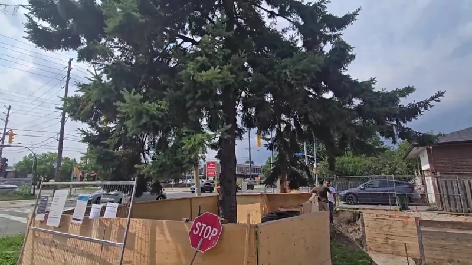
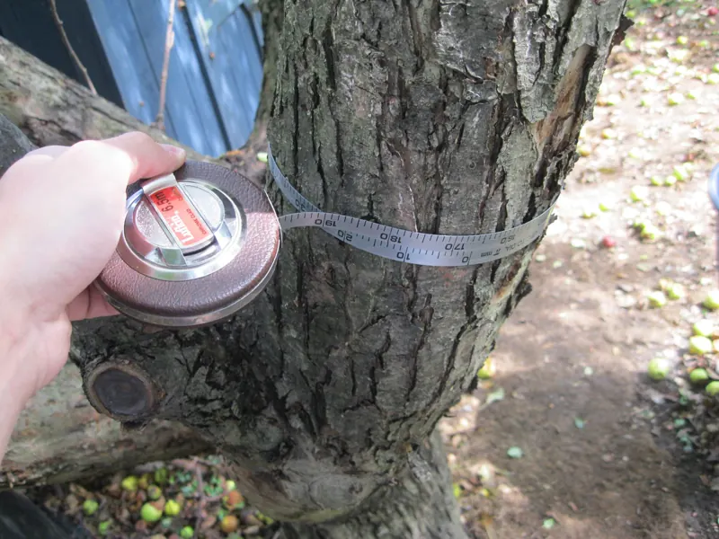
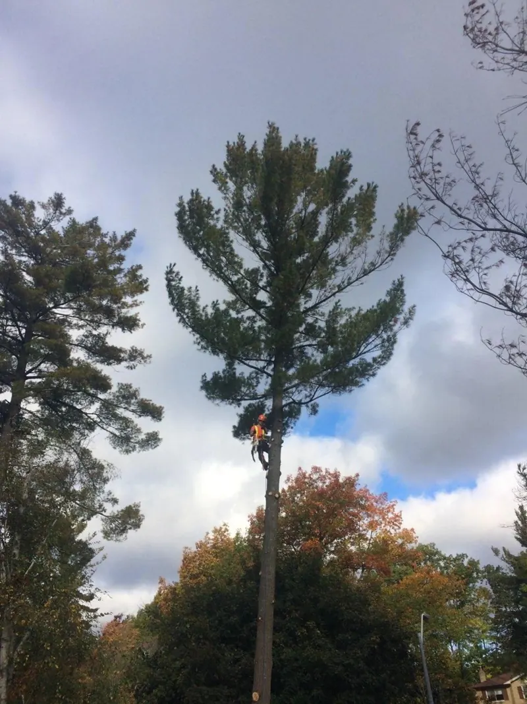

01
Arborist Reports & Tree Protection Plans
Construction-related arborist reports, tree preservation plans and replanting plans for permits, additions and garden suites.
Arborist reports, tree protection plans and permit applications for GTA homeowners and builders, prepared by ISA Board Certified Master Arborist Mark Ellis. Building a garden suite, addition or new home? Start here.
Owned and operated by Mark Ellis, ISA Board Certified Master Arborist and ISA Certified Urban Forest Professional. Fully licensed and insured, with WSIB coverage.
Most of our work starts with a building permit. We handle the arborist side so your project moves, and the trees get a fair chance.

Construction-related arborist reports, tree preservation plans and replanting plans for permits, additions and garden suites.
A supersonic air tool exposes roots without damaging them, so you know what's really under your footings.
Clean, arborist-supervised root pruning, with Urban Forestry approval where required.

Industry-standard TRAQ risk assessments when you need to know whether a tree is safe.

Heritage tree evaluations, Butternut Health Expert reports (O. Reg. 830/21) and ASCA tree appraisals.
Diagnostics, integrated pest management, cabling and bracing, plus construction-related removals coordinated so you don't juggle multiple companies.
No guesswork about what your municipality needs. Mark tells you up front what you need, and what you don't.
Inventory plus a general health and structure assessment of the trees affected by your project.
Where needed, an air-spade dig shows exactly which roots are in the way.
Arborist report, tree protection plan and replanting plan prepared to municipal standards.
Application support, hoarding installation and arborist-supervised root work.
An exploratory dig doesn't guarantee a permit. It tells you the truth. Usually it shows one of three things: no significant roots, so construction goes ahead; a few roots that can be pruned or worked around with small plan changes; or so many roots that the tree becomes a removal or the design has to change.
Cinerea has posted dozens of these digs on YouTube, address by address.
▶ Watch on YouTubePhotos and video stills from Cinerea's own jobs, with no stock. Tap any photo to enlarge.
Mark Ellis is the owner and operator of Cinerea. Before founding it, he held positions as Senior Consulting Arborist with Davey Resource Group, Arborist Foreman with the Regional Municipality of Wood Buffalo, and in Forest Health Care with the City of Toronto.
His approach is simple: the first price is the best and final price, and he'll never alter a tree's condition to suit a client's cause. It violates the ISA Code of Ethics.
“Great service. Mark was able to walk us through the whole process and prepare all the documents for our city permits. Truly "turn-key" service!”
“Mark has helped me obtain clearance from the city of Toronto urban forestry department in a record amount of time. He is a pleasure to work with, is very responsive and highly knowledgeable.”
“We've used Mark Ellis and Cinerea several times for our arborist needs related to assessing the condition of our trees and helping us with getting city tree removal permits for both sick trees and construction related removal permits. ... On top of that, their rates are very competitive.”
“He was also honest to explain what services I need vs. don't need, instead of trying to make the quote unnecessarily more expensive. And then he sent me links where I could further educate myself. I highly recommend Mark and his business!”
“The amazing thing about the conversation was how detailed and courteous he was with his advice, which he ultimately concluded that I should not hire anyone for this job (including his company). He was thorough and honest about my next steps and put my best interests ahead of his company's pocketbook (and during Covid too).”
Based in Keswick, Cinerea works across the GTA and York Region. Each municipality has its own tree by-law and permit process.
Send your address and project details, and we'll tell you what your municipality will require.
City/Town trees are generally only permitted for removal if they impede as-of-right construction, or if they're hazardous or in poor condition. Mark will tell you honestly where you stand.
It depends mostly on the tree's overall condition. Some species, like Manitoba maple and Siberian elm, have excellent chances; others are fair.
Yes. Jobs are quoted on the total expected work. The first price is the best price and the final price.
All work requires a 50% deposit before it starts, with the balance due on completion.
If the removal is related to your construction project, we'll help, so you don't need to involve multiple companies.